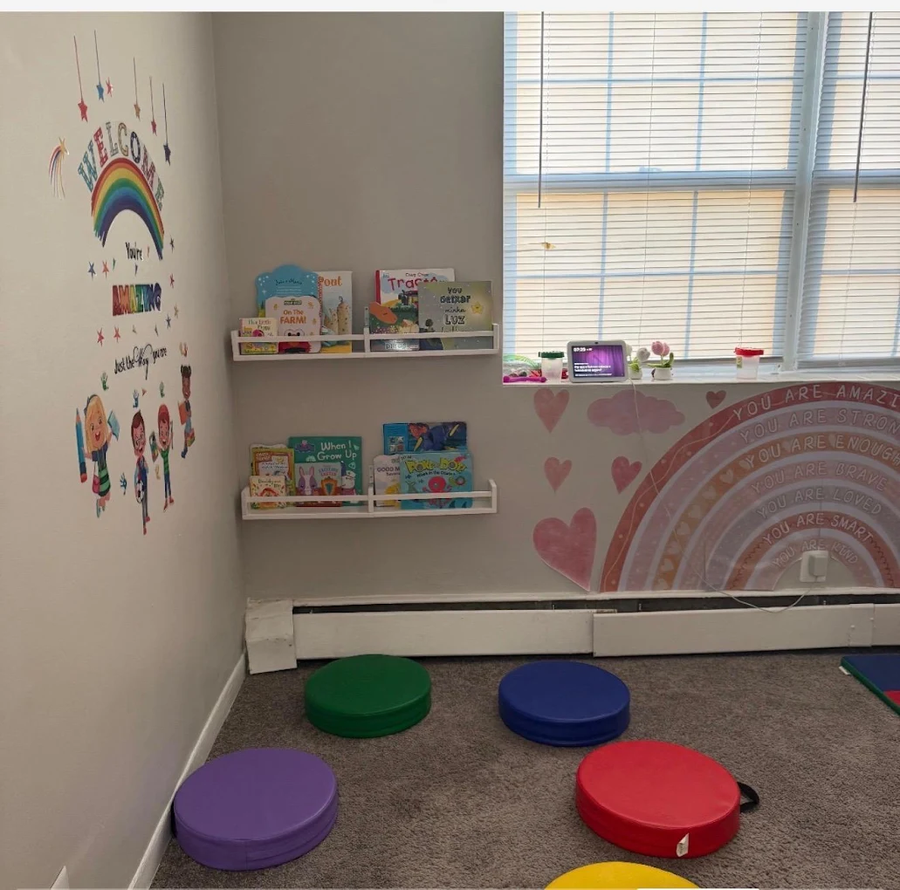
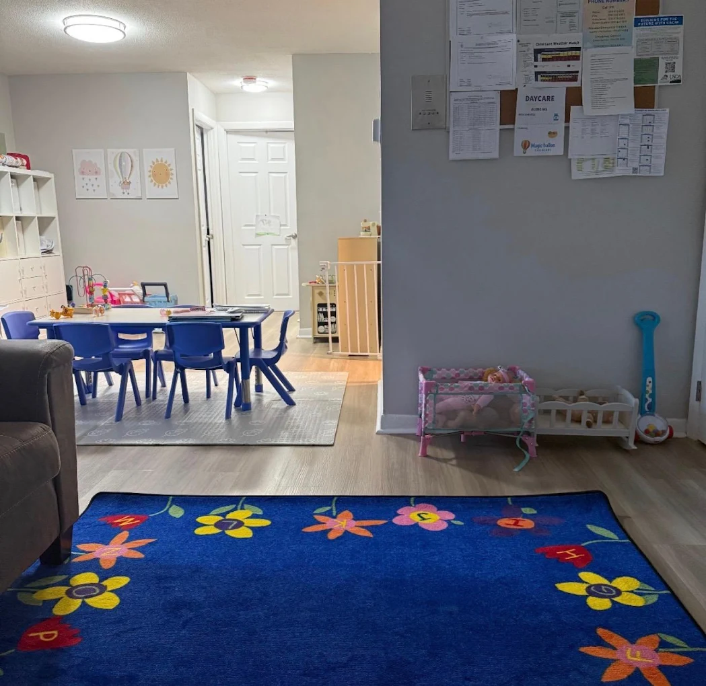
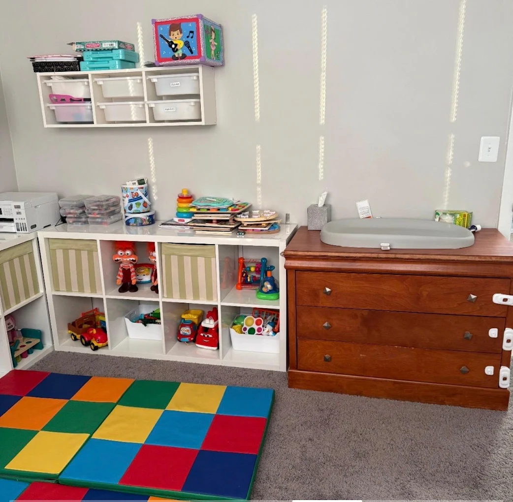

#DFF3FFFundamentos
Uma identidade alegre, com regras simples.
As cores vêm do balão da marca. Navy organiza a informação, branco dá respiro e a foto continua sendo a protagonista.
#102A4C#FFFFFF#FF5B87#FFC436#20B8B5#8067C8Logo consistente
Canto superior esquerdo, com margem de 6% e cápsula branca quando necessário.
Foto em primeiro lugar
Entre 60% e 75% da composição, sem filtros fortes ou texto sobre rostos.
Hierarquia curta
Um título forte, uma informação de apoio e no máximo três pequenos destaques.
Formas com propósito
Ondas, nuvens e estrelas aparecem como assinatura, nunca como decoração excessiva.
Títulos · Arial Rounded
Care that feels like home.
Textos · Avenir Next / sistema
Informação clara, acolhedora e fácil de ler no celular.
Biblioteca de templates
Cinco formatos para contar histórias diferentes.
Cada conceito aparece em Feed 1080 × 1350 e Story/Reel Cover 1080 × 1920. As copies são demonstrações de composição, não posts finais.
Foto / Rotina
Momentos reais, frase curta e fotografia dominante.

Vagas disponíveis
Mensagem comercial clara, sem aparência de anúncio barato.

Now enrollingOpenings
Available
Available
Full-Time · Framingham, MA
Child Care Vouchers AcceptedNow enrollingOpenings
Available
Available
Full-Time · Framingham, MA
Child Care Vouchers AcceptedInformativo
Uma informação principal e até três blocos rápidos.
Good to know
Child Care
Vouchers
Accepted
Vouchers
Accepted
Full-Time careFramingham, MAFamily Child Care

Good to know
Child Care
Vouchers
Accepted
Vouchers
Accepted
Full-Time careFramingham, MAFamily Child Care
Dica para famílias
Conteúdo educativo curto, visual e fácil de salvar.
Dica para famíliasComo tornar a primeira semana mais tranquila?
RotinaConfortoTempo
Dica para famíliasComo tornar a primeira semana mais tranquila?
RotinaConfortoTempo
Institucional
Provedora, ambiente ou diferencial com tom humano.

Meet the providerMeet
Lucineia
Lucineia
Care · Learning · Trust
Meet the providerMeet
Lucineia
Lucineia
Care · Learning · Trust
Simulação 3 × 3
Um feed reconhecível, sem ficar repetitivo.
Alternância sugerida entre rotina, informação, vagas, dicas e conteúdo institucional.
Little moments.
Big discoveries.
Big discoveries.
Good to knowVouchers
Accepted★
Accepted★
Now enrollingOpenings
AvailableFramingham, MA
AvailableFramingham, MA
Dica para famílias
Meet LucineiaCare that feels
like home.
like home.
Learning, playing
and growing.
and growing.
Everyday carePlay.
Explore.
Grow.
Explore.
Grow.